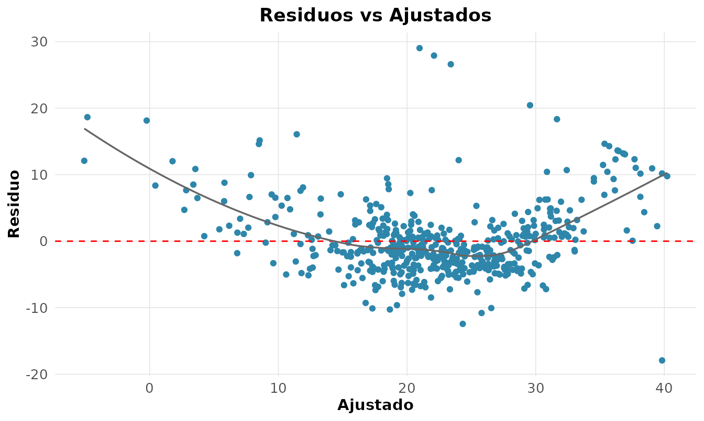

A regressão linear modela a esperança de uma resposta como função de preditores. Geometricamente, ela é a projeção ortogonal de sobre o espaço gerado pelas colunas de : a solução de mínimos quadrados e os valores ajustados são
e os resíduos
ficam ortogonais a
por construção — daí serem não-correlacionados com os preditores (Montgomery et al. 2012). Usamos
MASS::Boston: 506 bairros de Boston, com o valor mediano
dos imóveis (medv, em milhares de dólares).
dados <- MASS::BostonAjuste e interpretação dos coeficientes
fit <- rnp_regressao(medv ~ rm + lstat + crim, data = dados)
fit$coeficientes
#> # A tibble: 4 × 7
#> termo estimativa erro_padrao estatistica_t p_valor ic_inf ic_sup
#> <chr> <dbl> <dbl> <dbl> <dbl> <dbl> <dbl>
#> 1 (Intercept) -2.56 3.17 -0.809 0.419 -8.78 3.66
#> 2 rm 5.22 0.442 11.8 0 4.35 6.09
#> 3 lstat -0.578 0.0477 -12.1 0 -0.672 -0.485
#> 4 crim -0.103 0.032 -3.21 0.0014 -0.166 -0.04Cada coeficiente é o efeito parcial do preditor,
mantidos os demais constantes. O coeficiente de rm
indica que cada cômodo adicional eleva o valor mediano em cerca de US$ 5
200, controlando criminalidade e status socioeconômico;
lstat
mostra que bairros com mais população de baixa renda valem menos. Esse
“controle” é o que a regressão múltipla oferece e a correlação simples
não.
fit$modelo
#> # A tibble: 1 × 7
#> r2 r2_ajustado f_statistic f_pvalor sigma gl_residuos nobs
#> <dbl> <dbl> <dbl> <dbl> <dbl> <int> <int>
#> 1 0.646 0.644 305. 0 5.49 502 506O coeficiente de determinação
vale
:
o modelo explica cerca de 65% da variância de medv. O
ajustado penaliza preditores inúteis, e a estatística
testa o modelo contra o nulo (só intercepto).
Pressupostos e diagnóstico
A inferência (erros-padrão, ICs, p-valores) depende de quatro pressupostos: linearidade, homocedasticidade, normalidade dos resíduos e independência. Violá-los invalida a inferência, ainda que os coeficientes sigam úteis. Os gráficos de diagnóstico são o exame do modelo:
g <- rnp_grafico_residuos(lm(medv ~ rm + lstat + crim, dados))
g$residuo_ajustado
Queremos uma nuvem sem padrão em torno de zero. Um formato de funil indica heterocedasticidade; uma curvatura, não-linearidade. Os testes formais complementam o exame visual:
rnp_regressao_diagnosticos(lm(medv ~ rm + lstat, dados))$testes
#> # A tibble: 3 × 4
#> teste estatistica p_valor interpretacao
#> <chr> <dbl> <dbl> <chr>
#> 1 shapiro-wilk (residuos) 0.910 0 Rejeita normalidade
#> 2 breusch-pagan 75.6 0 Heterocedasticidade
#> 3 durbin-watson 0.834 NA Possivel autocorrelacao positivaMulticolinearidade
Quando preditores carregam informação redundante, os erros-padrão se inflam. O fator de inflação de variância mede isso a partir do da regressão do preditor sobre os demais:
rnp_vif(lm(medv ~ rm + lstat + tax + rad, dados))
#> # A tibble: 4 × 3
#> termo vif interpretacao
#> <chr> <dbl> <chr>
#> 1 rm 1.65 baixa
#> 2 lstat 2.10 baixa
#> 3 tax 6.38 moderada
#> 4 rad 5.98 moderadatax e rad (imposto predial e acesso a
rodovias) têm VIF próximo de 6 (“moderada”) — são, de fato,
correlacionados em Boston. Como regra, VIF
merece atenção e VIF
é grave.
Regularização: o compromisso viés-variância
Com muitos preditores ou colinearidade, aceitar um pequeno viés pode reduzir muito a variância e melhorar a predição. A ridge (L2) encolhe os coeficientes; o lasso (L1) ainda zera os irrelevantes, fazendo seleção de variáveis (Hastie et al. 2009):
rnp_regressao_lasso(medv ~ rm + lstat + crim + tax + rad, dados, lambda = 0.5)
#> # A tibble: 6 × 2
#> termo estimativa
#> <chr> <dbl>
#> 1 (Intercept) 1.03
#> 2 rm 4.75
#> 3 lstat -0.529
#> 4 crim -0.0289
#> 5 tax -0.0038
#> 6 rad 0Com
,
o lasso zera o coeficiente de rad,
descartando-o do modelo — algo que os mínimos quadrados nunca fazem. O
parâmetro
é o controle do compromisso entre viés e variância.
Resposta binária: regressão logística
Para classificar, modela-se a chance (odds) do evento pela função logito, , de modo que é a razão de chances. Voltando aos dados de diabetes:
pima <- MASS::Pima.tr
rnp_logistic(type ~ glu + bmi + age, data = pima)$coeficientes
#> # A tibble: 4 × 8
#> termo estimativa erro_padrao estatistica_z p_valor odds_ratio ic_inf ic_sup
#> <chr> <dbl> <dbl> <dbl> <dbl> <dbl> <dbl> <dbl>
#> 1 (Interc… -9.41 1.48 -6.37 0 0.0001 0 0.0015
#> 2 glu 0.0309 0.0064 4.78 0 1.03 1.02 1.04
#> 3 bmi 0.0919 0.0322 2.85 0.0044 1.10 1.03 1.17
#> 4 age 0.0526 0.017 3.10 0.002 1.05 1.02 1.09A razão de chances de glu
significa que cada unidade de glicose multiplica a chance de diabetes
por 1,03, controlando IMC e idade. A qualidade da classificação é medida
pela área sob a curva ROC:
prob <- predict(glm(type ~ glu + bmi + age, pima, family = binomial()),
type = "response")
rnp_curva_roc(pima$type, prob, positivo = "Yes")$auc
#> [1] 0.8355A AUC de 0.84 é a probabilidade de o modelo ranquear um caso positivo acima de um negativo tomados ao acaso (0,5 = aleatório; 1 = perfeito) — uma discriminação boa.
Predição: intervalo de confiança versus de predição
Há duas perguntas distintas ao prever. Qual o valor médio de
medv para todos os bairros com
e
?
— responde-se com o intervalo de confiança da média.
Qual será o valor de um bairro específico? —
pede o intervalo de predição, mais largo, pois inclui
também a variabilidade irredutível
em torno da média:
fit <- lm(medv ~ rm + lstat, data = MASS::Boston)
novos <- data.frame(rm = c(6, 7), lstat = c(10, 5))
rnp_predicao(fit, novos, tipo = "confianca") # média da resposta
#> # A tibble: 2 × 3
#> ajuste limite_inferior limite_superior
#> <dbl> <dbl> <dbl>
#> 1 22.8 22.1 23.4
#> 2 31.1 30.4 31.8
rnp_predicao(fit, novos, tipo = "predicao") # nova observação
#> # A tibble: 2 × 3
#> ajuste limite_inferior limite_superior
#> <dbl> <dbl> <dbl>
#> 1 22.8 11.9 33.7
#> 2 31.1 20.2 42.0Para o primeiro bairro, o IC da média é estreito (), mas o de predição é amplo (). Confundir os dois — usar o IC da média para prever um caso individual — subestima gravemente a incerteza, um erro comum em engenharia preditiva.
Síntese
| Etapa | Função | Pergunta |
|---|---|---|
| Ajustar | rnp_regressao |
os coeficientes fazem sentido teórico? |
| Diagnosticar | rnp_grafico_residuos |
os pressupostos valem? |
| Colinearidade | rnp_vif |
os preditores são redundantes? |
| Regularizar | rnp_regressao_ridge/_lasso |
vale trocar viés por variância? |
| Prever | rnp_predicao |
IC da média ou intervalo de predição? |
| Classificar |
rnp_logistic, rnp_curva_roc
|
quão bem separa as classes? |
O ajuste é o começo; o essencial é examinar se os pressupostos se sustentam.
Exercícios
Resolva com o rnp, usando MASS::Boston,
mtcars, cars e trees.
- Ajuste
medv ~ rm + lstat + crime interprete o coeficiente derm(rnp_regressao). - Qual a fração da variância explicada ()? Compare com o ajustado.
- Avalie os pressupostos do modelo pelos gráficos de resíduos
(
rnp_grafico_residuos). - Aplique os testes formais de normalidade, homocedasticidade e
autocorrelação (
rnp_regressao_diagnosticos). - Calcule o VIF de um modelo com
rm,tax,radeage; há colinearidade? (rnp_vif). - Ajuste uma regressão ridge e uma lasso ao mesmo modelo; o lasso zera
algum coeficiente? (
rnp_regressao_ridge,rnp_regressao_lasso). - Encontre o ótimo variando a penalização e observando os coeficientes.
- Em
cars, ajustedist ~ speedlinear e polinomial de grau 2; qual ajusta melhor? (rnp_regressao_polinomial). - Aplique a transformação de Box-Cox a
medv ~ rm + lstat; qual o ótimo? (rnp_box_cox). - Para um bairro com
rm = 6.5elstat = 8, calcule o IC da média e o intervalo de predição (rnp_predicao). - Ajuste uma regressão de Poisson a uma variável de contagem
(
rnp_regressao_poisson). - Ajuste a regressão logística
am ~ wt + hpemmtcarse interprete as razões de chances (rnp_logistic). - Trace a curva ROC e calcule a AUC do modelo anterior
(
rnp_curva_roc). - Construa a matriz de confusão para um limiar de 0,5
(
rnp_matriz_confusao). - Ajuste uma regressão robusta a dados com um outlier inserido e
compare com os mínimos quadrados
(
rnp_regressao_robusta).